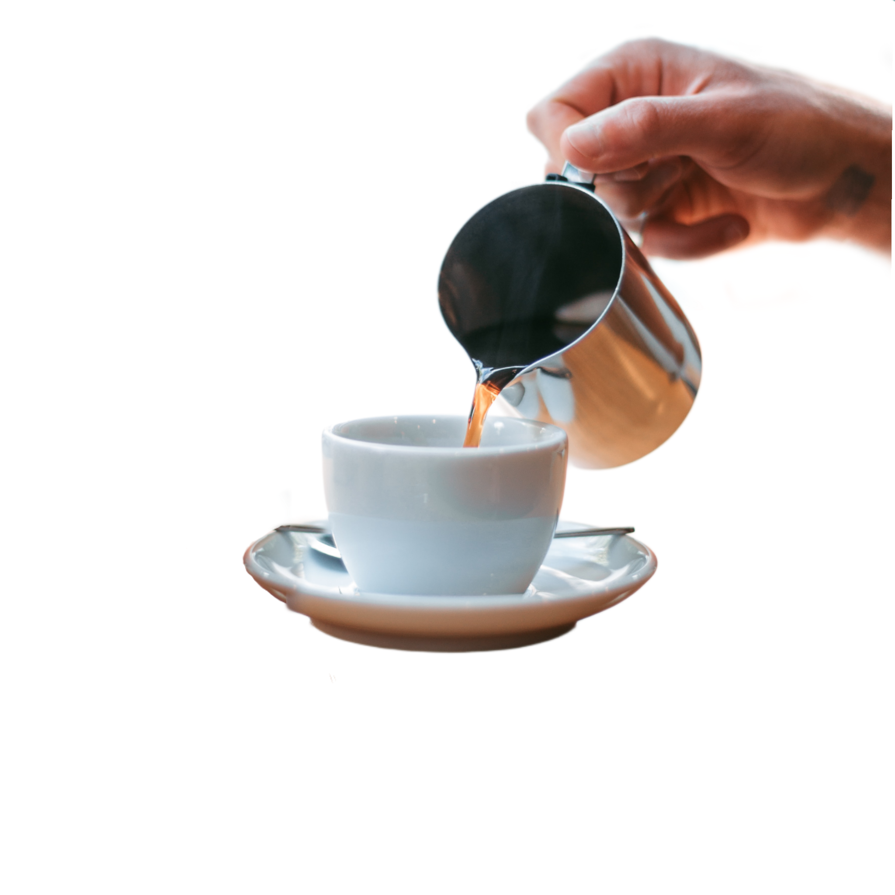

Leblon Café
Somos o café mais caro do Brasil, mas não é valor, e sim qualidade!
Somos o café mais caro do Brasil, mas não é valor, e sim qualidade!
O café Arábica tem tons mais doces que o café tradicional, com os materiais vindos diretamente da Amazônia, nossa empresa esta ligada diretamente com as preocupações ambientais.
Com uma vasta variedade de café, o Leblon Café conseguiu transcender a experiência dos clientes.
Assim, não é apenas beber café, é como fazer uma viagem pelo Brasil.
Por este motivo estamos há 13 anos no mercado. Da Zona Sul do Rio para o Mundo!
